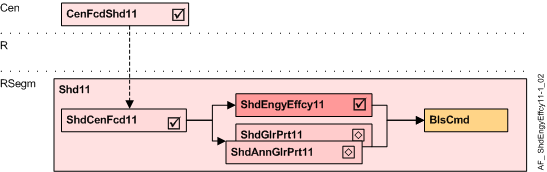

遮阳能源效率 (ShdEngyEffcy11)
Overview
应用功能》Shading energy efficiency 11, thermal protection" (ShdEngyEffcy11）包含能源效率功能。
注意：默认情况下，当房间无人时，热保护处于活动状态（RShdCoo11 中的配置）

岑 | 中央职能 |
CenFcdShd11 | Central facade shading for automatic 11 |
R | 房间 |
RSegm | 房间段 |
ShdCenFcd11 | Shading central facade function 11, for automatic |
ShdEngyEffcy11 | Shading energy efficiency 11, thermal protection |
ShdGlrPrt11 | Shading anti-glare protection 11 |
BlsCmd | Blinds command |
Function
AF 计算所需的能源效率位置，并准备必要的百叶窗命令。
为了正确操作，AF 需要 AF ShdCenFcd11 和太阳辐射传感器。
能效定位基于：
- The façade’s solar radiation, calculated in the central façade function (AF CenFcdShd11) as a multistate value SolRdnCnd (None, Low, Medium, High)
- The Room thermal load condition (RThLd) (Load / Heating, Unload / Cooling)
- The Energy mode for load (EngyModLd), configured to the needs of the room and the user
- The Energy mode for unload (EngyModUnLd), configured to the needs of the room and the user
这Energy mode for load定义房间热负荷条件的百叶窗位置“Load“（加热），基于太阳辐射条件（None, Low, Medium, High)
配置能源模式为“Load" | 太阳辐射条件下的百叶窗位置（来自 AF CenFcdShd11） | ||||
|---|---|---|---|---|---|
No | 姓名 | None | Low | Medium | High |
1 | Up / Down（默认） | 下移 | 无动静 | 向上移动 | 向上移动 |
2 | Up / No operation | 无动静 | 无动静 | 向上移动 | 向上移动 |
3 | No operation | 无动静 | 无动静 | 无动静 | 无动静 |
- Criteria for "High" (high solar radiation):
"Move up" is used to allow heat gain via solar radiation
"No operation" is used when heat gain is not possible due to the design of the façade product - Criteria for "Medium" (medium solar radiation):
Same as "High" - Criteria for "Low" (low solar radiation):
"Low" is used as a hysteresis to avoid frequent movements due to changes in the solar radiation - Criteria for "None" (no solar radiation):
"Move down" is used, when moving down the blinds or awnings prevents heat loss due to convection through the window
"No operation" is used to avoid any movement. The blinds or awnings must be opened manually or via time scheduler
这Energy mode for unload定义房间热负荷条件的百叶窗位置“Unload“（冷却），基于太阳辐射条件（None, Low, Medium, High)
配置能源模式为“Unload" | 太阳辐射条件下的百叶窗位置（来自 AF CenFcdShd11） | ||||
|---|---|---|---|---|---|
No | 姓名 | None | Low | Medium | High |
1 | Down / Up | 向上移动 | 无动静 | 下移 | 下移 |
2 | Sun tracking / Up（默认） | 向上移动 | 无动静 | 移动到太阳跟踪位置 | 移动到太阳跟踪位置 |
3 | Down / No operation | 无动静 | 无动静 | 下移 | 下移 |
4 | Sun tracking / No operation | 无动静 | 无动静 | 移动到太阳跟踪位置 | 移动到太阳跟踪位置 |
- Criteria for "High" (high solar radiation):
"Sun tracking" is used to allow maximum daylight even when the solar radiation protection is active to prevent heat gain through the window
"Move down" is used instead of "sun tracking", when - no sun tracking is possible or does not work correctly due to the design of the façade product or
- the user does not want sun tracking (too much movement)
- "High" solar radiation can block manual operation, see below.
- Criteria for "Medium" (medium solar radiation):
Same as "High". Manual operation can not be blocked. - Criteria for "Low" (low solar radiation):
"Low" is used as a hysteresis to avoid frequent movements due to changes in solar radiation. - Criteria for "None" (no solar radiation):
"Move up" is used when the user wants to have as much daylight as possible.
"No operation" is used to avoid any movement. The blinds or awnings have to be opened manually or via time scheduler. - For "High" solar radiation, manual operation via pushbuttons can be blocked by setting CtlModUnldHi to 1.
0 = Normal (Default) enables manual operation regardless of the solar radiation.
Configuration
 Parameters
Parameters
描述 | 范围 | 默认值 |
|---|---|---|
Control mode by unload at high solar radiation 0:Normal | CtlModUnldHi | 0:Normal |
Energy mode for load 1:Up / Down | EngyModLd | 2:Up / No operation |
Energy mode for unload 1:Down / Up | EngyModUnld | 2:Sun tracking / Up |
Interface
界面 | 描述 | 类型 | 参考号 | 拥有者 |
|---|---|---|---|---|
RThLdCnd | Room thermal load condition 1:Load（加热） | MCalcVal | ● | - |
Engineering and commissioning
- The sun tracking function and solar radiation thresholds are configured in the central façade AF CenFcdShd11.
- The AF is required for energy efficiency control.
- For correct operation, the AF requires AF ShdCenFcd11 with a solar radiation sensor.
Troubleshooting
验证 CFC 中图表的功能：所有评估的值都可以在图表输出上看到。